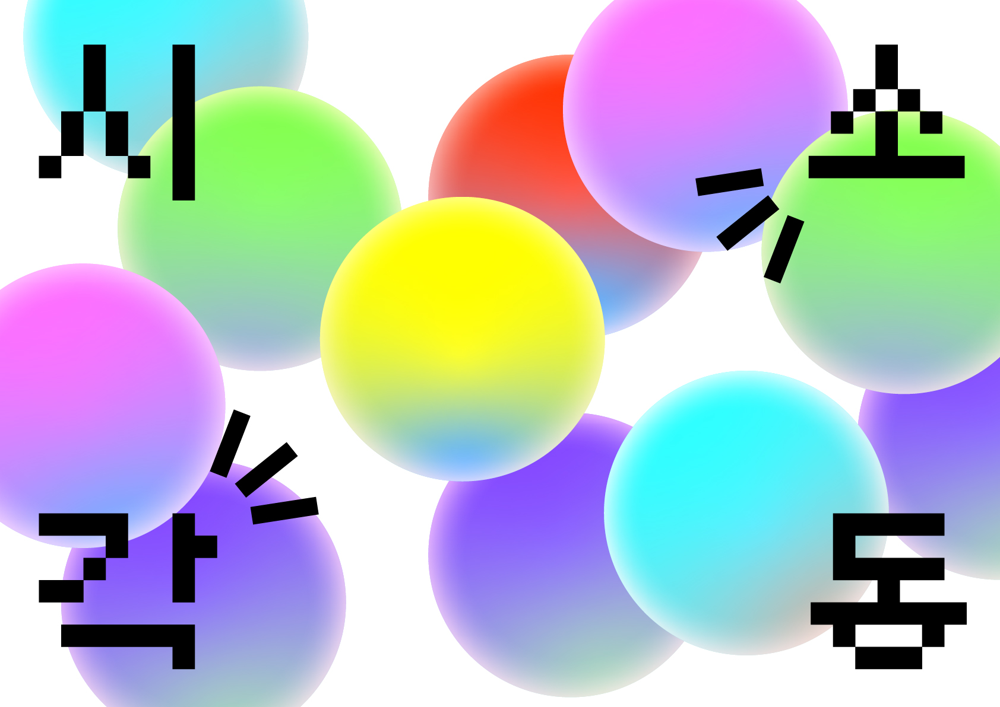

BOUND BOOK OF SCRAPS
VD1
교과서 해부하기
학생 시절 학교 교과서를 시험범위별로 바인딩하였던 것을 모티브로 하여
중학생 때부터 쌓여온 교과서와 문제집들을 요소별로 묶어 바인딩한 시리즈.
SHAPE POSTER
VD1
Morden Chaekgeori
책가도의 이미지를 그래픽적으로 단순화하여 표현한 시리즈.
MINIMALISM POSTER
VD1
Bleeding Heart
텍스트가 피처럼 뚝뚝 떨어지는 모습으로 꽃의 이름을 시각화하였음.
MAXIMALISM POSTER
VD1
It Resurrects!
연약한 느낌의 이름과는 다르게 생명력이 강한 금낭화의 특징을 시각화하였음.
GENERATIVE SYSTEM
VD1
Floriography Series
꽃의 언어체계를 활용하여 기본도형 모듈로 꽃을 구성하고, 그 꽃들을 모은 꽃다발을 노래에 대응시킨 포스터 시리즈.
5 PATTERN POSTERS
VD1
Shape of My Personality
나의 성격을 대표하는 5가지 키워드를 정하고, 그에 맞는 물건들을 활용하여 5장의 포스터를 구성함.
EXHIBITION IDENTITY
VD1

#00000: 코딩 언어의 블랙과 전시 테마인 오렌지를 사용하여 사이버틱한 분위기로 브랜딩하였다.
CD Play!: CD보다는 Play에서 모티브를 따와 시각디자인 전공끼리 모여 놀 수 있는 고전 게임같은 분위기로 브랜딩하였다.
SELF IDENTITY
VD2
이 위치로 직접 가서 확인해보세요!